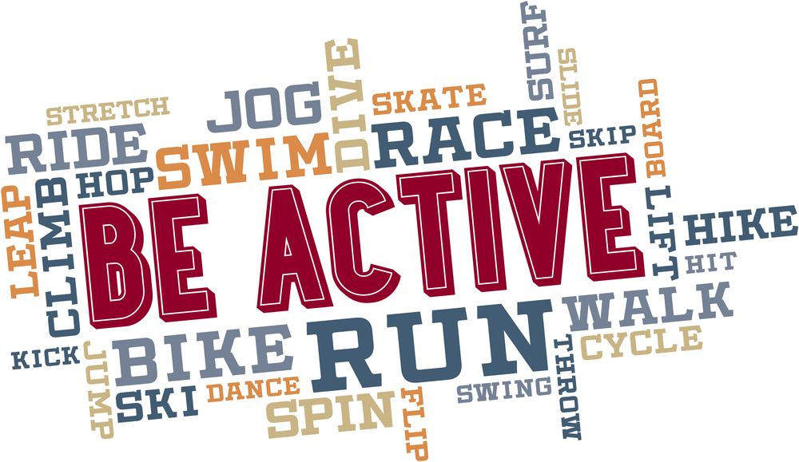

Good Morning!
How to Stay Healthy
Stay Healthy
Physical health― Taking care of your body

4 Tips to boost your Mental Health.
Mental health includes our emotional, psychological, and
social well-being. It affects how we think, feel, and act. It
also helps determine how we handle stress, relate to others,
and make choices. Mental health is important at every stage
of life, from childhood and adolescence through adulthood.
-
Learn Ways to manage stress.You can't
avoid stress, so you need to learn how to manage it. This
will help you stay calm and be able to function in
stressful situations.
-
Study and do you best in school. There is
a strong link between heath and academic success.
-
Try to maintain a good relationship with your
parents.Remember that they want what is best for
you. Try to see where they are coming from when they set
rules.
-
Develop a good balance between school, work, and
social life.Limit your activities to the most
important ones and give those 100%. Overextending yourself
can lead to stress, frustration, or exhaustion.
Back to top
© How to stay healthy? Temuulen 2018